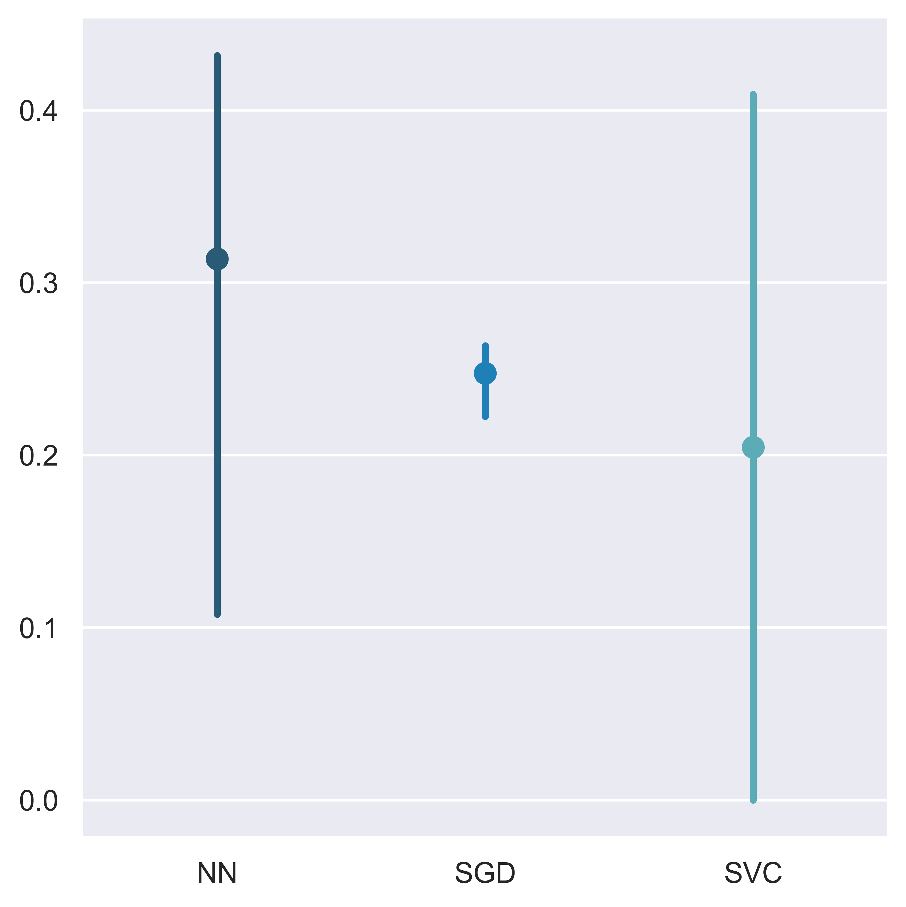
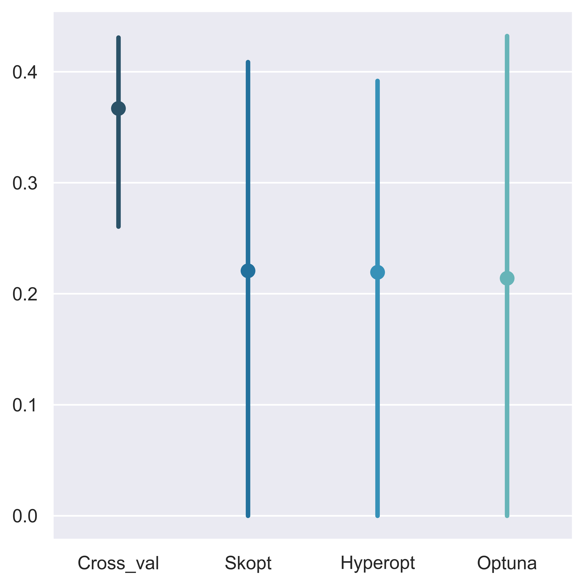

Training machine learning models that perform well has become increasingly easier.
However, there is a lot more to take into account when attempting to do so, than just fitting them and predicting. In this project the objective
is not to use patterns in data and machine learning modeling for any particular application, but rather to explore some problems that may arise
when dealing with a dataset that will pose
problems for a machine learning task. In this particular case, we are attempting a classification problem for which there is not enough data.
As a main takeaway is the idea that understanding the data,
what problem are we trying to solve, and which methods are adequate for the task, is paramount before engaging in ML modeling. Failure to
understand this could mean executing algorithms that take several hours to run in exchange for very low performance in terms both of results
and computational efficiency, or even trying and failing repeatedly to solve a problem that is actually unsolvable with the available data.
Exploratory Data Analysis
The original data contains 73,861 observations (beer recipes) with 21 features (characteristics of the observations) segmented
in 176 classes (beer styles). From this data we will make two subsets. Dataset-1 will be selected by keeping only the classes that represent at least
0.5% of data (in order to be able to stratify in the cross-validation methods) and Dataset-2 will be selected by keeping only the two largest classes.
Moreover, we apply a filter on the selected classes on the 'Sugar Scale' variable to keep only the larger class in this feature, since it is highly
unbalanced. After selecting the data and applying the filter, we have 53,753 observations and 47 classes in Dataset-1 and 18,405 observations and 2
classes for Dataset-2.
Distribution of beer styles in Dataset-1 and Dataset-2 respectively.
To clean the data, we simply dropped the columns (features) that had too many missing values or that were irrelevant for the classification
task. For example, the amount of beer made in the recipe tells us no information about what style the recipe belongs to. The rows
with missing values after keeping the most relevant features were dropped as well. The reason for not imputing is that we are interested
in using this data for experimentation on machine learning modeling, rather than trying to extract patterns for a practical application.
Also, Original Gravity and Final Gravity are highly correlated, so one of them was dropped.
A good way of understanding the intricacies of the beer styles represented in the recipe samples, is the following dendrogram, since it
provides a way of quickly visualizing similarity between beer styles of interest. This was made by taking the beer styles as vectors
on euclidean space described by the mean of the feature for each class corresponding to each entry. Then, single-linkage hierarchical clustering
with euclidean metrics was applied.
Dendrogram of beer styles (Dataset-1). The closer the connection of beerstyles to 0 on the X axis, the more similar they are.
Labels are colored according to a uniform 4-partition of the 'Color' feature range.
To show the difficulty of this classification task, due to the fact that there is simply not much data to help distinguish between classes,
we illustrate the overlap between the Dataset-2 (binary) classes on the features that were kept with their pairwise (2D) projections.
Pairwise projections of the Dataset-2 classes.
Moreover, we show how similar distributions between classes are when it comes to variables that usually makes beer styles somewhat
different for the consumer: alcohol content and color.
Pairwise projections of the Dataset-2 classes.
Performance
For all the methods tested, we use hyperparameter optimization to show that the accuracy is bounded
not by model complexity or efficiency but by the data itself. This is the part where it becomes clear
that at some stage it becomes pointless to try and apply more complex machine learning models to the problem at hand.
Linear Classifiers
Formally speaking, the Stochastic Gradient Descent method is an optimization algorithm (it seeks to minimize some function) and not per se
a model for classification. However, scikit learn's SGDClassifier is an instance in which we can select hyperparameters that will yield
a classification model as a particular case. Since we are using hyperparameter optimization tools, we might as well select this method
first. In general, what linear classifiers do is try to segment the space the data is embedded in, into regions that will correspond to the
classes in our task, using lines, planes or hyperplanes as separators. For Dataset-1, we have only 7 features for 47 different classes.
That could be enought provided that the data is
very clearly separated in space, which is not the case in this example, as we can see from the pairwise projection plots
(of the simplified
Dataset-2) above.
Non-linear Support Vector Machines
Roughly speaking, what suppor vector machines do is find hyperplanes in space that separate datapoints into regions associated with classes, very much like
linear classifiers, except that this regions are found in the space resulting form applying a non-linear transformation to the original
data feature space (if a SVM has a linear kernel, then it is a linear classifier). Such transformation is applied with the purpose of mapping
datapoints into regions that are more easily separable than they were in the original space.
Neural Networks
Finally, a neural network is a concatenation of linear and non-linear transormations on the original space that make up a highly
non-linear model for decision boundaries on the resulting space. Hence, this method adds a lot of complexity and it should be perfoming the best
in terms of accuracy. In practice, there is always a trade off between complexity and efficiency, since more complex algorithms will
usually take longer to run. For example, if we are faced with a binary classification task on data that is clearly separable, there is no
reason to use a neural network on the first attempt, since linear classifiers are very likely to work well.
Hyperparameter Optimization
The performance, efficiency and complexity of machine learning models is mainly set by the hyperparameters that we choose to use.
For simple datasets, sometimes the default parameters are good enough to produce a decent outcome. But when data is not so simple,
we are faced with making the decision of selecting not only a model that can perform as accurately as possible, but that is reasonably
fast for our purposes. Moreover, for large problems, trial and error (grid and random search methods) can be a very long and useless way
of selecting models and hyperparameters.
For the latter, it's recommendable to use some form of optimization method. We use 3 different methods from the Python libraries
scikit-optimize, Hyperopt, and Optuna.
Results
For Dataset-1 model complexity helped increase the accuracy especially from the SGD (stochastic gradient descent linear classifier) to
the SVC (support vector machine) methods, and less so from SVC to the NN (neural network) method, even though the NN is much more complex.
Moreover, for several iterations it was necessary to interrupt the hyperparameter search (due to running times), and therefore we cannot be
certain that the improvement obtained by going from SVC to NN is significant. Hence, we can infer that increasingly complex models will
improve decreasingly less due to the fact that the data has too many classes and not enough information to make out significant differences
between them. For the Dataset-2 overall accuracy was increased (which is expected since it became a simplified binary classification task) but
there seems to be no improvement from SVC to NN, and very little improvement from SGD to SVC. At this point, since method complexity with
hyperparameter optimization is failing to improve accuracy scores, we can conclude that it is pointless to keep trying even more complex models,
since the data yields just enough information for the obtained accuracy scores in the different methods.
Dataset-2 confusion matrix.

Dataset-1 Model Performance.Dataset-2 Model Performance.

Dataset-1 Optimization Algorithms Performance.Dataset-2 Optimization Algorithms Performance.